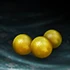
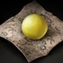
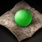
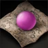

Система развития персонажа
Гайд по меридианам
и акупунктуре
Основа развития
Меридианы
Меридианы — это система развития персонажа. Повышение их уровня улучшает характеристики героя: здоровье, Ци, критический удар и защиту от нейгунов. Для развития меридианов требуется Ци, которую можно получить в бою, за участие в активностях, использование бытовых навыков и с помощью Пилюль Ци.
Каждая Великая школа имеет собственные связанные Меридиан и Обратный Меридиан. У каждого меридиана есть несколько каналов с акупунктурными точками. Открытие этих узлов повышает максимальный уровень меридиана. Продвижение по точкам тесно связано с развитием внутренних искусств школы.
Термины системы
Основные понятия
Канал и точки
У каждого меридиана есть определённое количество точек. Например, у меридиана Ци их 8.
Оборот
Уровни развития акупунктуры.
Сокровище
Предмет, увеличивающий характеристику акупунктуры. Каждое сокровище имеет собственный параметр.
Техника
Пассивное умение, которое становится доступно после открытия меридиана.
Очки техник
Начисляются за открытие акупунктурных точек.
Слоты техник
Необходимы для использования техник и открываются за очки техник. Первый слот стоит 1 очко, каждый следующий — вдвое больше.
Истинная Ци
Аналог очков умений. Используется для развития акупунктуры и повышения уровня каналов.
Ресурс развития
Ци
Ци — это опыт, необходимый для повышения уровня меридианов. Ежедневное количество Ци определяется рангом персонажа: чем выше ранг, тем выше дневной лимит.
Ци, не полученная из-за недостижения дневного лимита, переносится в дополнительный резерв. Он может накапливаться до 30 дней и становится доступен после достижения обычного дневного лимита. Когда лимит исчерпан, игрок получает уведомление.
VIP-подписка
Умножает получение Ци в пять раз.
«Молодой герой»
Увеличивает дневной лимит Ци на 40%. Бонус действует только на дневной лимит и не накапливается.
Основные источники
Получение Ци
Некоторые способы получения Ци перечислены ниже.

Жёлтая пилюля Ци
Нанесение урона навыками боевых искусств генерирует Ци пропорционально нанесённому урону. Для большинства игроков это основной источник Ци.
Пилюли Ци
Пилюли, например Пилюля Мистического Духа, дают прирост Ци. Это частая награда за задания и игровые активности.
Опыт
При получении опыта персонажу также начисляется некоторое количество Ци.
Бытовые навыки
Действия бытовых навыков генерируют Ци. Музыканты с подпиской «Молодой герой» могут использовать бесконечный режим музыкальной практики для получения Ци в режиме AFK.
Командная практика
Достижение ежедневного лимита командной практики даёт персонажу дополнительное количество Ци.
Расширение лимита
Пилюли Земной Ганодермы
| Название | Предмет | Действие |
|---|---|---|
| Жёлтая Пилюля Земной Ганодермы |  | 4-й меридианОткрывает дополнительный слот |
| Зелёная Пилюля Земной Ганодермы |  | 5-й меридианОткрывает дополнительный слот |
| Пурпурная Пилюля Земной Ганодермы |  | 6-й меридианОткрывает дополнительный слот |
| Пилюля Земной Ганодермы Тысячелетия | 7-й меридианОткрывает дополнительный слот | |
| Пилюля Нефритовой Ганодермы Тысячелетия | 8-й меридианОткрывает максимальный слот |
Вкладки и школы
Общее представление о меридианах
Странник
К Страннику относим мировые стартовые нейгуны.
Основы Школ I
Старая вкладка со школами. Порядок в списке — сверху от Куньлуня и вниз до Тяньшаня:
- Куньлунь
- Город Наказаний
- Эмей
- Блаженные
- Нищие
- Удан
- Ученые
- Тан
- Лейб-Гвардия
- Шаолинь
- Культ Минг
- Тяньшань
Основы Школ II
Святилище Шаманов. В эту вкладку будут добавляться следующие школы.
Цзянху
Все мировые меридианы.
Защита и уклонение
Типы урона
Каждый набор наносит урон определённого типа. Для противодействия используют меридианы, усиливающие защиту от конкретного типа. Внешний урон снижается только снаряжением.
Уклонение
Тан и Эмей, а также их сектантские меридианы.
Внутренняя защита
Эмей, Культ Минг, Тяньшань и Куньлунь усиливают защиту от внутренних боевых искусств.
Без внутренней защиты
Город Наказаний, Нищие, Блаженные и Удан.
Выбор под стиль боя
Атакующие меридианы
Для внутренников
Блаженные
Меридиан ориентирован на внутренний крит и пробитие внутренней защиты.
Ученые
Точность, крит и игнор внутренней защиты; на высоких уровнях добавляется игнор внутренней выносливости.
Нищие
Точность и крит внутренних искусств, а также рассеивание вражеских внутренних навыков.
Эмей
Игнор защиты от внутренних искусств и уклонение.
Для внешников
Эмей
Точность внешних искусств.
Тан
Ловкость и шанс крита внешних искусств.
Лейб-Гвардия
Внешний крит, точность и восстановление здоровья.
Шаолинь
Точность внешних искусств.
Тяньшань
Мощь, ловкость и сопротивляемость. Не высший приоритет, если характеристик уже хватает.
Дополнение к основному набору
Универсальные меридианы
Их рекомендуется подключать как дополнение, когда основные меридианы уже прокачаны.
Город Наказаний
Мощь и дыхание, внутренний и внешний крит. По мере развития появляется процентный бонус к шансу крита.
Удан
Дыхание и дух для внутренних искусств, а также шанс крита внутренних и внешних искусств.
Культ Минг
Мощь и точность внутренних и внешних искусств.
Выживаемость и мобильность
Танковые меридианы
Ориентированы на выживаемость, защиту и мобильность.
Шаолинь
Сопротивляемость, снижение критического урона и, вероятно, самый большой прирост здоровья.
Куньлунь
Выносливость парирования, бонус к выносливости и духу, защита от внутренних искусств.
Тан
Уклонение и ловкость — хорошая основа для мобильного защитного билда.
Инь, Ян и скрытые меридианы
Меридианы Цзянху
Инь — для внутренних искусств
Развивается медленно. На 180-м уровне все внутренние искусства типа Инь-Чжэнь добавляют характеристики этому меридиану. Гармония тоже даёт прибавку, но меньшую.
Обязательный выбор для позднего PvP и этапа получения 6-го свитка внутренних искусств.
Ян — для внешних искусств
Противоположность Инь: бонус к мощи и ловкости. Внутренние искусства Ян значительно усиливают меридиан на 180-м уровне. Гармония — немного слабее.
Обязательный выбор для персонажей, использующих внешние искусства.
Скрытые Инь и Ян
Это более слабые версии меридианов Цзянху, подходящие развивающимся персонажам. Они открываются при максимальном уровне внутренних искусств школы, подсекты и фракции: 6-й уровень для школы и 2-й уровень для подсекты.
У скрытых фракций, например Безродных, есть только одно внутреннее искусство — потребуется именно оно. Скрытые Инь и Ян хорошо дополняют набор активных меридианов, пока основные меридианы Цзянху ещё недоступны.
| Меридиан | Назначение | Когда использовать |
|---|---|---|
| Инь | Для внутренних искусств; развивается медленно. | Обязателен для PvP и 6-го свитка нэйгуна. |
| Ян | Для внешних искусств; даёт мощь и ловкость. | Обязателен для внешников. |
| Инь + Ян | Оба меридиана прокачаны. | Держите оба активными. |
| Скрытые Инь и Ян | Облегчённые версии для начинающих. | Открываются при максимальной прокачке нэйгуна школы, секты или фракции. У Безродных нужно их единственное внутреннее искусство. |
Узлы и очки комбо
Комбо-навыки
Цепочки комбо — система, которая убирает общий кулдаун между двумя конкретными навыками школы. Очки комбо даются за открытие узлов меридианов. Всего доступно 8 слотов, стоимость растёт в геометрической прогрессии.
Разберём по шагам
- 1-й узел — без очка комбо. При активации после прокачки нэйгуна до нужного уровня он служит «входным билетом»: открывает возможность качать меридиан дальше.
- 2-й узел — 1 очко комбо. Вы получаете его за открытие узла.
- 3-й узел — ещё 1 очко комбо. И так далее за следующие узлы.
Первый узел не считается.
Зачем это сделано
Первый узел обычно самый лёгкий: для него достаточно прокачать базовый нэйгун до 20–25 уровня. Если бы он давал очко комбо, игроки могли бы просто открывать по одному узлу в каждом меридиане и получать лёгкие очки. Поэтому для получения очков комбо нужно вкладываться в дальнейшую прокачку нэйгуна, тратить больше времени и ресурсов.
Тренировка нэйгуна других школ
Чтобы открыть узлы чужого меридиана, нужно изучить нэйгун этой школы. Книги добываются на ограблении книг, а для 2-го и 3-го рангов нужен альтернативный персонаж.
Страницы Прорывов
Позволяют поднять максимальный уровень нэйгуна с 18 до 30. Нужно примерно 7 штук, чтобы дойти до 25-го уровня для активации узла.
Добываются во время шпионажа с 18:00 до 24:00 по GMT+8.
Круги развития
Книжки на меридианы
Книги расположены в порядке возрастания количества кругов.
Предметы и места обмена
Другие предметы
Спящее Зло
Красный Узелок
| Город / поселение | Координаты |
|---|---|
| Чэнду | (665, 742) |
| Лоян | (1085, 677) |
| Нанкин | (1208, 1019) |
| Сучжоу | (493, 369) |
| Пекин | (340, 99) |
| Деревня Фонарей | (879, 632) |
| Пелена Дождя | (376, 1038) |
| Рассветный Ям | (658, 363) |